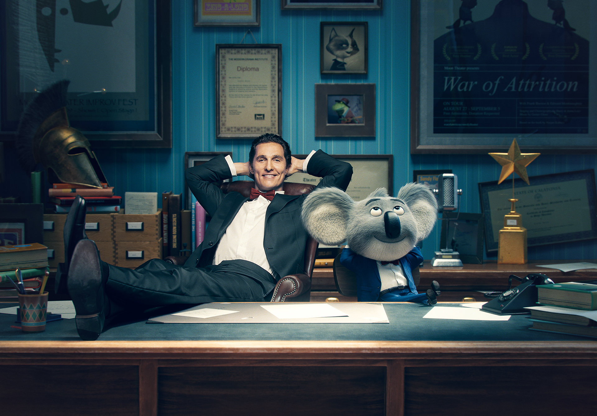
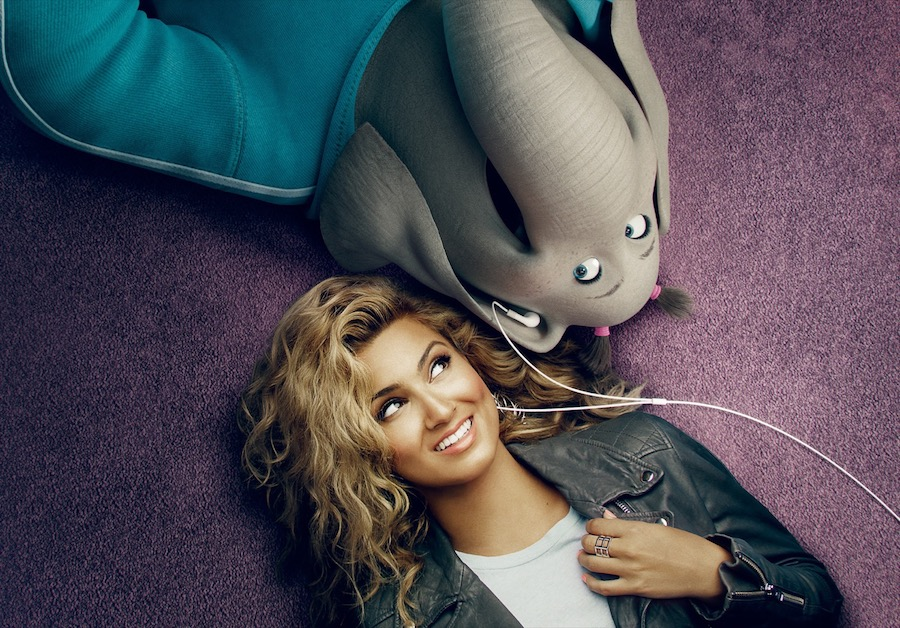
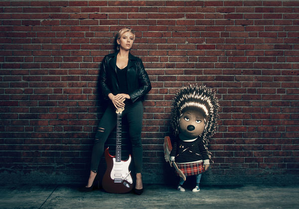
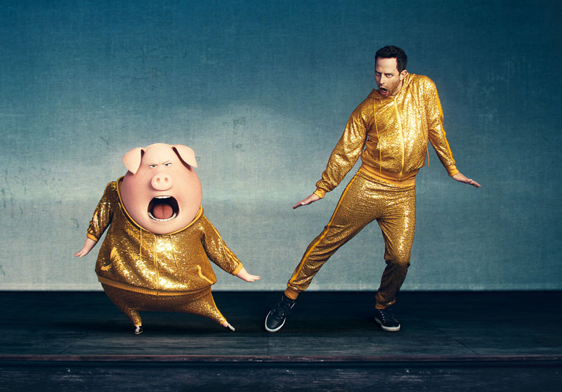

Buster moonMatthew McConaughey as Buster Moon, an optimistic koala who plans to save his theater from closure by holding a singing competition. |
 |
RositaReese Witherspoon as Rosita, a pig who gave up her teenage music dreams to become a devoted wife to Norman, and mother to their 25 piglets. |
 |
MikeSeth MacFarlane as Mike, a small white mouse "with a big Frank Sinatra-esque voice and an arrogant attitude." |
 |
MeenaTori Kelly as Meena, a teenage elephant with an exquisite voice and severe stage fright. |
 |
EddieJohn C. Reilly as Eddie Noodleman, a sheep and Buster's friend who doubts the future of the theater. |
 |
JohnnyTaron Egerton as Johnny, a teenage gorilla who wants to sing, though his father wants him to follow his criminal footsteps. |
 |
AshScarlett Johansson as Ash, a teenage porcupine and punk rocker who takes part in an alternative-rock music group with her boyfriend Lance until she rejects him, and there is strife when she makes it into the competition and he does not. |
 |
GunterNick Kroll as Gunter, a dancing pig partner to Rosita. |
 |